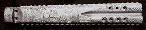
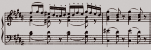
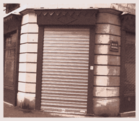

“The aim and final end of all music should be none other than the glory of God and the refreshment of the soul”
Johann Sebastian Bach

Welcome to Byron & Son
Byron & Son is a small company that has been run by professional
musicians since 1937.
At B&S we are dedicated to our customers and make sure they find
the perfect and unique instrument they are looking for.
We specialize in historical string, woodwind and brass instruments.
We also have some keyboard and percussion instruments for sale.
All of the rare instruments are original and in excellent condition,
worthy collectors items!

Our particular area of expertise is rare vintage stringed instruments
: harps, lyres, mandolins, aeolian harps, violins, cellos, guitars, banjos,
ukuleles…
In our shop, we also have a great deal of stringed instruments of foreign
origin : balalaikas (Russia), hardingfeles (Norway), khims (Thailand and
Cambodia), komungoes (Korea), koras (Africa), kotoes (Japan), nyckelharpas
(Sweden), sitars (India), xalams (West Africa)… and new ones every
week !
We buy and sell Renaissance, Baroque, Classic, Romantic (14th - 18th century) woodwinds : flutes (open, end-blown and closed), single-reeds (clarinets, basset horns) and double-reeds (cornamuses, crumhorns, shawms, rauschpfeifes, oboes, bassoons, bagpipes, bombardes, tarogatoes, cromornes).


We have valuable brass instruments for sale: buccinas, buisines, cornetts, cornets, horns, sackbuts, bugles, trumpets, trombones, bazookas, euphoniums, tubas, and much more…
At Byron & Son’s you will find everything you need, from
sheet music, songbooks, manuals (method books for amateur to professional
musicians) to photos and postcards to tapes and records to parts (bridges,
cases, strings, tailpieces, wrenches, and hard to find parts…).
We sell antique sheets music produced from the 1500s onward: truly rare
collectibles featuring some of your favorite songs. Come and check them
out : it would be a wonderful gift for you or someone you love.


We are one of the America's most knowledgeable dealers in vintage instruments. Take a moment to come and see our rare and unique collection in a shop that has been open since 1937.